Theorem nat_ratio of type Forall¶
from the theory of proveit.numbers.number_sets.rational_numbers¶
see dependencies
In [1]:
import proveit
# Automation is not needed when only building an expression:
proveit.defaults.automation = False # This will speed things up.
proveit.defaults.inline_pngs = False # Makes files smaller.
%load_theorem_expr # Load the stored theorem expression as 'stored_expr'
# import the special expression
from proveit.numbers.number_sets.rational_numbers import nat_ratio
In [2]:
# check that the built expression is the same as the stored expression
assert nat_ratio.expr == stored_expr
assert nat_ratio.expr._style_id == stored_expr._style_id
print("Passed sanity check: nat_ratio matches stored_expr")
In [3]:
# Show the LaTeX representation of the expression for convenience if you need it.
print(stored_expr.latex())
In [4]:
stored_expr.style_options()
In [5]:
# display the expression information
stored_expr.expr_info()
| core type | sub-expressions | expression | |
|---|---|---|---|
| 0 | Operation | operator: 1 operand: 3 | 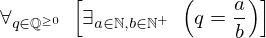 |
| 1 | Literal |  | |
| 2 | ExprTuple | 3 | 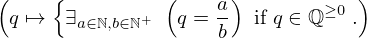 |
| 3 | Lambda | parameter: 20 body: 5 | 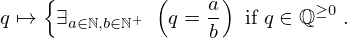 |
| 4 | ExprTuple | 20 |  |
| 5 | Conditional | value: 6 condition: 7 |  |
| 6 | Operation | operator: 8 operand: 11 | 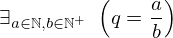 |
| 7 | Operation | operator: 27 operands: 10 | 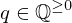 |
| 8 | Literal |  | |
| 9 | ExprTuple | 11 | 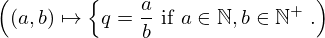 |
| 10 | ExprTuple | 20, 12 | 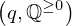 |
| 11 | Lambda | parameters: 25 body: 13 | 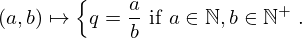 |
| 12 | Literal |  | |
| 13 | Conditional | value: 14 condition: 15 | 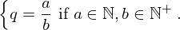 |
| 14 | Operation | operator: 16 operands: 17 | 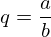 |
| 15 | Operation | operator: 18 operands: 19 | 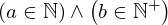 |
| 16 | Literal |  | |
| 17 | ExprTuple | 20, 21 | 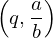 |
| 18 | Literal |  | |
| 19 | ExprTuple | 22, 23 | 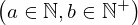 |
| 20 | Variable |  | |
| 21 | Operation | operator: 24 operands: 25 |  |
| 22 | Operation | operator: 27 operands: 26 |  |
| 23 | Operation | operator: 27 operands: 28 |  |
| 24 | Literal |  | |
| 25 | ExprTuple | 29, 31 |  |
| 26 | ExprTuple | 29, 30 | 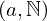 |
| 27 | Literal |  | |
| 28 | ExprTuple | 31, 32 |  |
| 29 | Variable |  | |
| 30 | Literal |  | |
| 31 | Variable |  | |
| 32 | Literal |  |